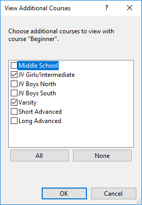

View/Other Courses
Allows viewing other courses in your event along with the course you are viewing.

The dialog box shows all the courses other than the one you are currently viewing. Place check boxes next to the courses you wish to view. Each of the checked courses will be displayed in a different color on the main view.
Note: The additional courses to view are maintained for each tab. You can switch tabs, then switch back, and the additional courses will still be visible.